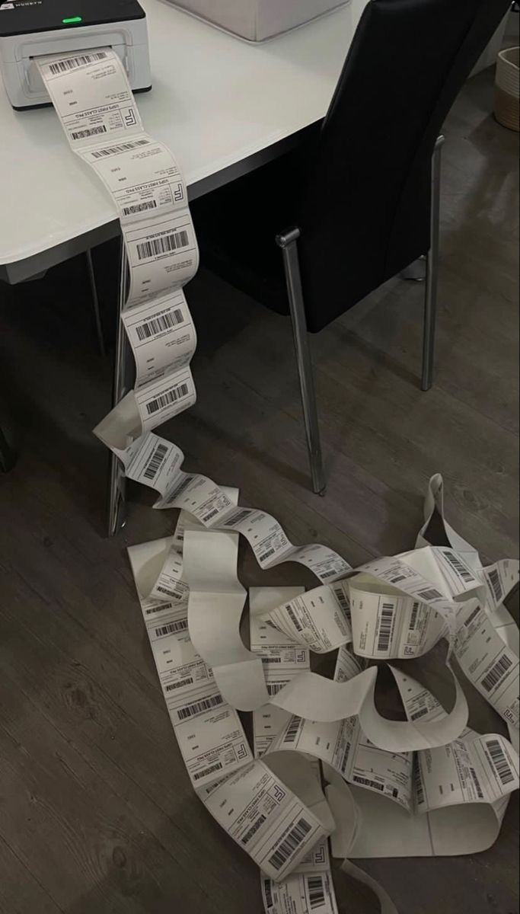
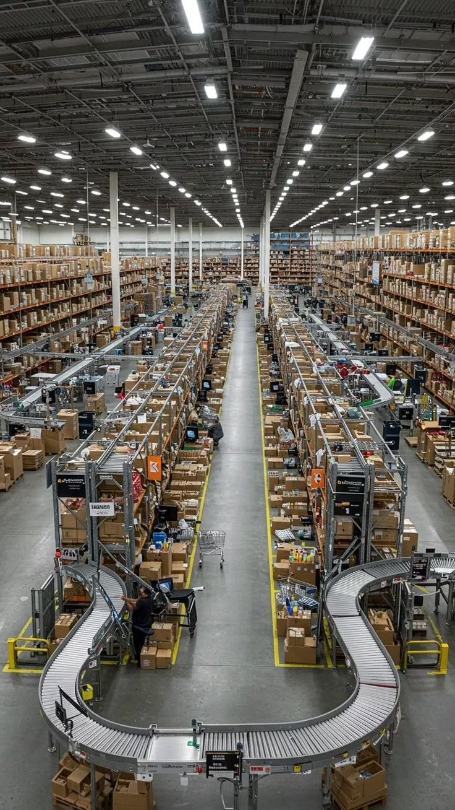

the closer i get to actually releasing these products the more real the fear becomes.
there's a theoretical version of blue particle that exists in my head and on my laptop. it's perfect in the way only theoretical things can be. it's not constrained by user feedback or market reality or the actual limitations of time and resources. once i launch it has to exist in the real world. which means it gets to be judged. gets to be compared to other things. gets to fail visibly. the theoretical version can't fail.
arguuu is almost ready. the code is solid. the ai integration is working. the interface is intuitive. we have our first cohort of beta testers lined up. everything is in place. except my brain keeps finding new things that could be better. new edge cases that need handling. new potential failure points. i could be ready in two weeks. i could also iterate for six months and still not feel completely ready.


there's a specific anxiety in that gap. because at some point you have to accept that ready is not a destination you arrive at. it's a decision you make. you decide that good enough is good enough and you release. i'm not great at that decision.
what if people don't want what i'm building. what if the market is smaller than i think. what if there's a better solution and i've just wasted months on something that doesn't matter. what if i'm not actually good at this and i've just been lucky so far. the arguments against launching are infinite. the argument for launching is simple: i'll never know until i try.
that's the terrifying part. not the failure. the not knowing. so i'm going to launch. probably sometime this quarter. definitely before my own fear convinces me it's a bad idea. wish me luck.
← Back to Blog